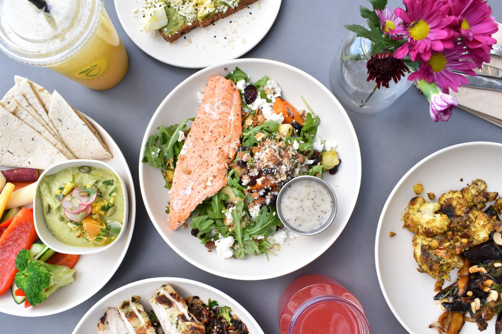

Choix du dépôt

Titre du dépôt : Food Classification with Deep Learning in Keras / Tensorflow
Auteur : Patrick Rodriguez (https://github.com/stratospark)
En quoi consiste le projet : classification des images de plats par des réseaux de neurones.
Des images de nourritures sont contenues dans la base sur laquelle le modèle apprend. Chaque image représente un plat.
La classe est aussi connue et donne la catégorie du plat. Il y a 101 catégories au total (de 0 à 100) et 1000 images.
En donnant une image au modèle, celui-ci peut ensuite donner la catégorie du repas.
Une description plus en détails du projet est faite ensuite.
Pourquoi avoir choisi ce dépôt : La problématique, l'utilisation de Deep Learning nous ont tout de suite intéressées.
Puis lorsque ca parle de nourriture, ca nous parle :).
Présentation du projet
Génèse du projet :
Le créateur aime la cuisine maison et la bonne cuisine en général.
Il prend un modèle pré entraîné de Keras sur lequel il applique ses données.
Il n’y précise pas de raison exacte à la sélection de ce sujet.
Algorithme des CNN :
Des images sont utilisées en données d’entrée pour l’apprentissage du modèle.
Celles-ci passent ensuite à travers plusieurs couches du réseau de neurones.
Tout d’abord, avec la première couche de neurones, une matrice de filtre est utilisée.
Celle-ci contient des poids qui vont construire une combinaison linéaire des pixels sur une région de l’image traitée.
Chaque neurone prend en compte une partie de l’image.
Cependant, la même matrice est utilisée par chaque neurone (pour chaque région de l’image) pour éviter d’augmenter le nombre de paramètres (et donc overffiter);
car les poids de ces matrices sont les paramètres du modèle.
Nous obtenons donc une nouvelle image reproduite suite aux combinaisons linéaires faites par la matrice kernel, et après mise en place de la fonction d’activation.
C’est la couche de convolution. Des couches de max pooling et de average pooling sont aussi utilisées après la convolution.
Celles-ci permettent de réduire la taille des images.
Pour chaque région de l’image de départ (donc après convolution), la moyenne (ou le maximum) des pixels est gardée pour créer une nouvelle image plus petite.
Cela se refait plusieurs fois à travers plusieurs couches. Enfin, en sortie nous retrouvons la classe à laquelle appartient chaque image.
Pour trouver les paramètres optimaux, il faut minimiser la fonction de perte.
Nous recherchons donc les paramètres qui permettent cela. Pour arriver à ce modèle, il est possible d’utiliser la descente de gradient ou encore des méthodes telles qu’Adam.
Il est ensuite possible de calculer l’accuracy sur le test pour avoir le taux de bonne prédiction des classes.
En deep learning il existe d’autres métriques plus précise qui sont les suivante :
- top 1 accuracy qui détermine le nombre de fois où la vraie classe correspond à la classe prédite qui a la plus forte probabilité.
- top 5 accuracy, c’est combien de fois la classe réelle fait partie des 5 classes prédites avec le plus de probabilité.
Etapes du projet :
- Redimension des images qui sont inférieures à une certaine taille pour pouvoir prendre des crops de taille correcte lors de la data augmentation (prendre des parties d’image).
- Séparation train/test déjà faite. (25 000 et 75 000 environs)
- Encodage de chaque classe (vecteur binaire) pour éviter d’avoir une seule variable qui peut prendre plusieurs classes en valeurs.
- Ensuite une technique de data augmentation (qui correspond au fait de mettre les images sous plusieurs angles différents pour que l’algorithme puisse les reconnaître à chaque fois même s’il y a des modifications) : utili
sation du cropping ici qui est l’une des méthodes existantes.
- Dans un premier temps crop 1 : ImageNet ré entraîné sur le modèle Google Inception V3 (qui est connu pour avoir l’un des meilleurs résultats par rapport à d’autres modèles → voir diapo 3 conv_net slide 73 du cours).
Tout d’abord un seul crop est pris (c’est-à-dire juste une partie de l’image). Architecture : des couches de convolution, de average pooling, max pooling, des concat, 2 fully connected, 2 softmax à la fin, 1 dropout à la fin aussi (voir le schéma).
Image de taille (299, 299, 3) -> 3 le nombre de chanel. 1 chanel = 1 couleurs (rouge, bleu et jaune). Descente de gradient prend comme learning rate 0.01 et momentum de 0.9. La fonction de perte est la cross entropie catégorielle. 32 epoch (itérations).
- Ensuite test avec crop 10 : Image en haut à gauche, en haut à droite, en bas à gauche, en bas à droite et au centre sont sélectionnées à chaque fois. On reprend ces mêmes régions de l’image sur l’image inversée. Ce qui fait un total de 10.
C’est fait sur les données du test. Après création de ces crop, le but est de les prédire afin d’évaluer la précision de leur prédiction. Il reprend le modèle utilisé sur le train et essaye de prédire les images du test (après avoir établit les crops de 10).
Pour chaque image, nous disposons donc de 10 prédictions (pour chaque crop). De meilleurs résultats au niveau de l’accuracy sont retrouvés avec cette méthode, plutôt qu’avec crop 1.
Résultats et performance de l'algorithme :
- Avec crop 1 : loss: 0.5638 - acc: 0.8663 - val_loss: 0.6895 - val_acc: 0.8159 (bizarre car dans l’intro donne une autre chiffre : 82.03%)
- Sur le test, avec crop 10, on obtient donc de meilleurs résultats qu’avec le crop 1 :
Top-1 Accuracy, 10-Crop: 86.97%
Top-5 Accuracy, 10-Crop: 97.42%
Nous pouvons également regarder la matrice de confusion ou on a aussi un classement des plats par ordre décroissant de l’accuracy (le moins bien classé est le steak et le meilleur est l'edamame).
Un détail des contributeurs et changements majeurs est fourni ensuite.
Contributeurs
et changements majeurs

Contributeur :
Il semble qu’il y ait 1 seul et unique contributeur : “stratospark”, ou encore “Patrick Rodriguez”.
Membre actif de la plateforme, avec 47 repos (dont 20 dont il est propriétaire, et 27 fork), et un total de 615 contributions de Février 2020 à février 2021 !
Composition du dépôt Github:
- un README.md : Le readme contient aussi un lien permettant d’utiliser le classifier en ligne.
On peut fournir en entrée l’URL d’une image et le classifier retourne les probabilités d’appartenance de l’image à 5 classes de plats.
(http://blog.stratospark.com/deep-learning-applied-food-classification-deep-learning-keras.html)
- un fichier de LICENSE, ici MIT License:
La licence MIT donne aux utilisateurs l'autorisation expresse de réutiliser le code dans n'importe quel but, parfois même si le code fait partie d'un logiciel propriétaire.
Tant que les utilisateurs incluent la copie originale de la licence MIT dans leur distribution, ils peuvent apporter des changements ou des modifications au code pour répondre à leurs propres besoins.
- un fichier requirements.txt :
Tous les packages à installer et leurs versions.
- un fichier Python food.py :
contient l’algorithme de Deep Learning appliqué.
- un Jupyter notebook (Python) :
permet d’avoir des informations sur le GPU et notamment le pourcentage de GPU utilisé en fonction du temps (graphiques).
- Un répertoire d’images (jpg) pour le modèle.
Pull requests ans issues :
Le projet est composé d’une unique branche “master”.
On ne compte aucune “pull request”.
En revanche, on dénombre 20 “issues” encore ouvertes et 4 fermées.
Nous listons ensuite des suggestions d'améliorations concernant l'utilisation de cet algorithme de classification de nourriture.
Suggestions d'amélioration
- Augmentation du nombre d’images / plus de classes / différentes variétés culturelles :
Pour améliorer le projet actuel il serait peut-être intéressant d’augmenter le nombre
d’images qui permettra d’améliorer la précision qui est déjà élevée, ou alors de
mettre en place plus de classes pour avoir des plats plus variés qui intègrent des
spécialités de plus de pays.
- Détection des ingrédients / allergènes :
L’idée serait d’utiliser cet algorithme afin de pouvoir détecter la présence de certains aliments dans les plats.
Lors de l’affichage du nom du plat qui est représenté sur l’image, d’afficher une liste des ingrédients fréquemment contenus dans le plat.
Par exemple, pour des sushis nous retrouverons : riz, algue, sel, sucre, saumon.
Cette idée permettrait aux personnes ayant des contraintes alimentaires de pouvoir être informées par la présence de certains produits tels que le lactose, le gluten, la viande, ou même les œufs pour les végétaliens.
Pour arriver à cela, il faudrait créer une colonne à côté de celle des classes, qui contiendrait ces informations.
Pour cela il faudrait ajouter une colonne ingrédients dans le premier fichier food-101/meta/classes.txt dans lequel se trouve les noms et les numéros de classe.
Pour chaque classe les liste d’ingrédients serait listé dans cette nouvelle colonne. On crée ensuite un dictionnaire qui prendrait en clé le nom de la classe et en valeurs la liste d’ingrédients. Cela est fait dans l’étape de la création des dictionnaires de classe et d’index.
Puis ajouter un print du dictionnaire des ingrédients en fonction de la classe qui a été prédite à la toute fin du notebook.
- Interaction avec l'utilisateur :
De plus, pour aller plus loin, il serait aussi possible de mettre en place une interaction avec l’utilisateur.
Celui-ci pourrait entrer l’aliment dont il ne veut pas ainsi que l’image du plat qu’il souhaite manger; l’algorithme pourrait donc lui répondre si oui ou non il est autorisé à en consommer.
Ou alors l’utilisateur pourrais donner un aliment qui voudrait manger (car il lui reste de cet aliments dans son frigo et il ne veut pas gacher par exemple) et le programme retournerai une liste de plats réalisable avec cet ingrédient.
- Aide aux consommateurs étrangers :
Une autre utilisation de ce projet pourrait être intéressante. Celle-ci serait de pouvoir localiser les lieux (tel que les supermarchés ou les restaurants) où le plat est disponible.
Il peut être pratique d’utilisation en pour les touristes par exemple.